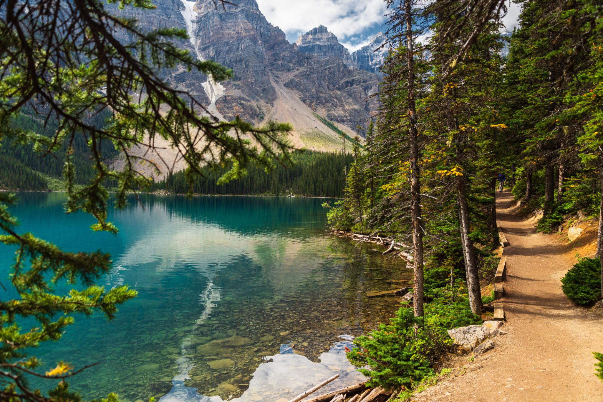

← 모레인 호수
🥾 Lakeshore Trail
Moraine Lake
⭐ 에메랄드빛 모레인 호수를 가장 가까이에서 즐기는 산책 코스

📅 우리 일정
Day 3 오전 (Rockpile 전후 자유 산책)
🏞 기대 풍경
💎 에메랄드빛 모레인 호수
🏔 Valley of the Ten Peaks
🌲 잔잔한 숲길과 호숫가
🛶 카누가 떠 있는 풍경
📸 호숫가 감성 사진 명소
📏 기본 정보
🚶 걷는 거리
왕복 약 3km
⏱ 걷는 시간
약 45~60분
💪 난이도
매우 쉬움
📈 고도차
거의 없음
🚻 편의시설
✔ 화장실 (주차장 근처)
✔ 셔틀 승·하차장
✔ 카누 대여소
✖ 매점 없음
🎒 준비물
👟 편한 운동화
🧥 가벼운 바람막이
📷 카메라
🕶 선글라스
💡 여행 Tip
✔ 아침 시간에는 호수가 가장 아름다운 색을 보여줍니다.
✔ 호숫가는 평탄하여 누구나 부담 없이 걸을 수 있습니다.
✔ Rockpile Trail과 함께 둘러보면 모레인 호수를 다양한 시각에서 감상할 수 있습니다.
✔ 카누가 떠 있는 풍경은 모레인 호수의 대표적인 풍경 중 하나입니다.
📍 Google Maps
🗺 트레일 지도
← 모레인 호수